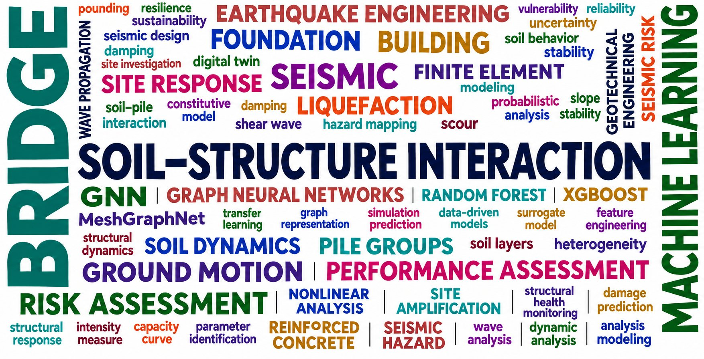

Soil–structure interaction
Studying the relationship between structures and the soil that supports them.
Research Assistant at Clemson University, exploring soil–structure interaction and applications of machine learning models to engineering problems.
Explore my research →My research interests lie in soil–structure interaction and the application of machine learning models. I am interested in how computational approaches can support the understanding and analysis of interactions between structures and the ground.
Studying the relationship between structures and the soil that supports them.
Exploring data-driven models and their potential applications in engineering.

N Ravichandran, A Bahuguna, J Sundararajan
Indian Geotechnical Journal 56 (8), 3875–3900 · 2026
A Bahuguna, J Sundararajan, N Ravichandran
International Journal of Geomechanics 26 (5), 04026080 · 2026
J Sundararajan, A Bahuguna, N Ravichandran, RD Andrus, NE Harmon
Geo-Congress 2026, 534–543
N Ravichandran, MAH Bhuiyan, VS Jella, A Bahuguna, J Sundararajan
Geosciences 15 (4), 115 · 2025
M Firoj, A Bahuguna
Proceedings of the Institution of Civil Engineers–Structures and Buildings … · 2025
Research Assistant · Clemson University
abahugu@clemson.edu
Google Scholar ↗